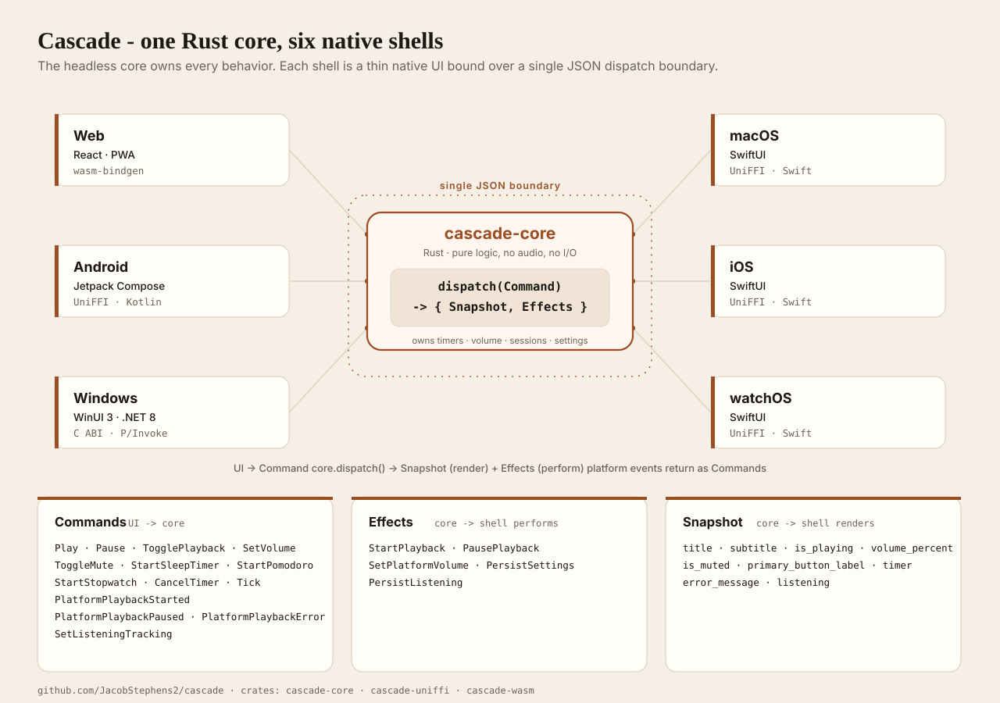

One Rust core, six native shells
Cascade is a waterfall white-noise player for focus and sleep, and an architecture kata. A single headless Rust core owns every behavior - state, timers, volume, sessions, settings - and each platform is a thin native UI over one JSON boundary. The core never touches an audio API, the filesystem, or the clock.

The boundary
Every interaction is one call: dispatch(Command) -> Update { Snapshot, Effects }.
The UI sends Commands (Play, SetVolume, Tick). The core returns a Snapshot to render and a list
of Effects the shell performs - start playback, set platform volume, persist settings. Platform
events, like audio starting or a tick of wall-clock time, fold back in as Commands. No chatty
getters cross the boundary, and time is an input the UI supplies rather than something the core reads.
One core, many shells
The same commands, effects, and snapshots serialize over each platform's binding:
- Web - React PWA wasm-bindgen
- Android - Jetpack Compose UniFFI / Kotlin
- macOS - SwiftUI UniFFI / Swift
- iOS - SwiftUI UniFFI / Swift
- watchOS - SwiftUI UniFFI / Swift
- Windows - WinUI 3 C ABI + P/Invoke